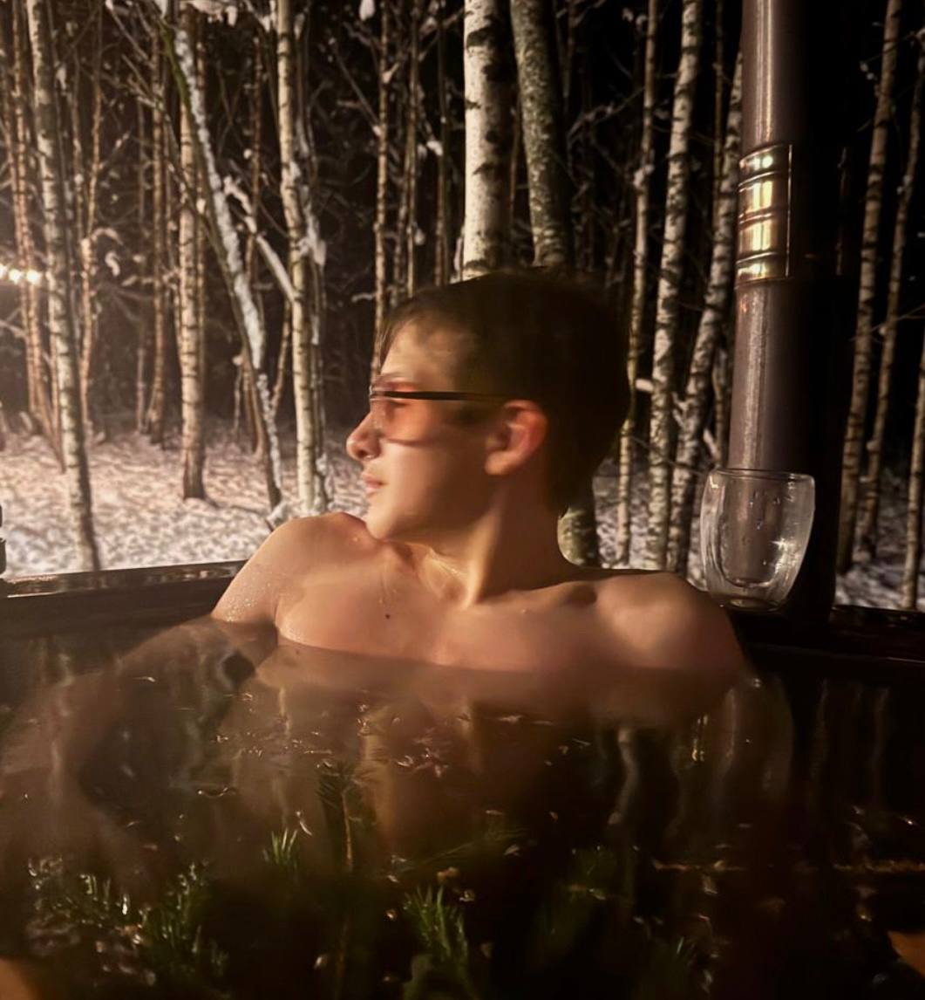

MATVEY
VOLKOV
×
CEO PERSONA AGENCY

Matvey
Volkov
Social Media Producer
>1 year in sphere
@motvolkov
Persona
Agency
since 2025
Persona Agency
✦
Social media production
✦
Since 2025
✦
P
A
Persona Agency
Агентство по продюсированию
социальных сетей
>
0
views for clients
>
0
человек в команде
1990
Более года на рынке